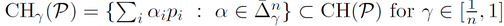
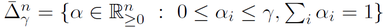
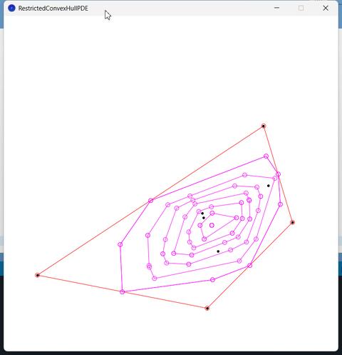
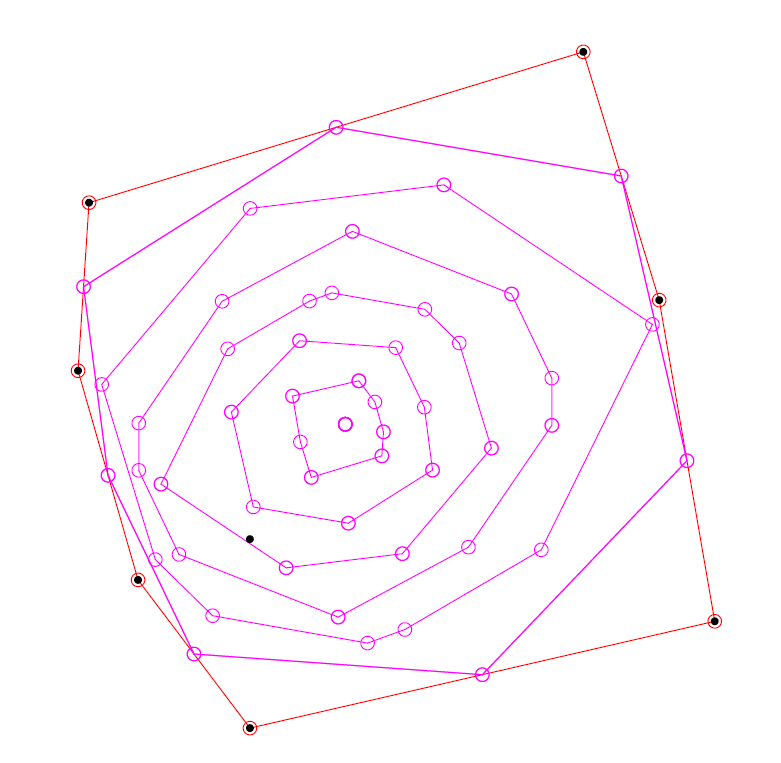
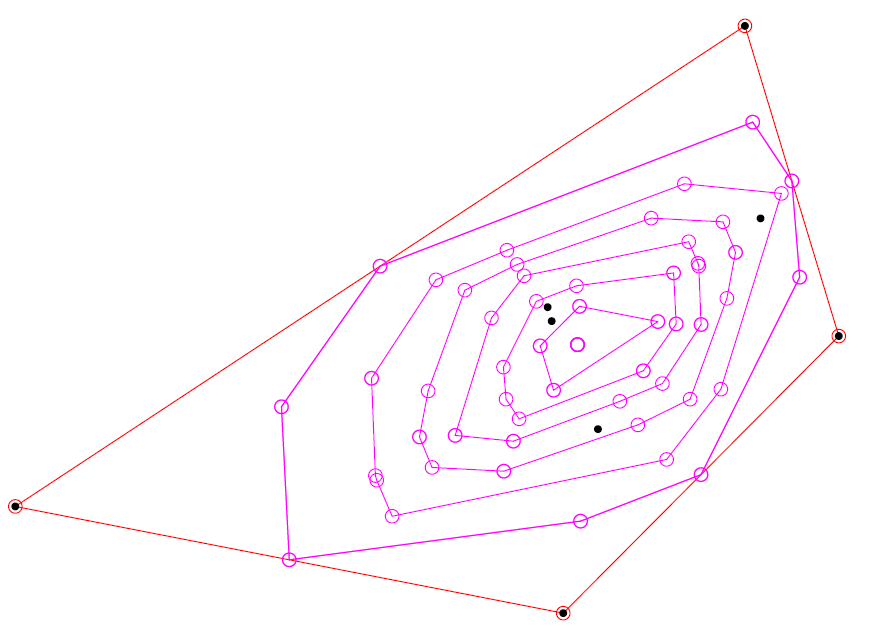

Restricted convex hulls (RCH)
The closed convex hull of a set S of n points is obtained by taking all convex combinations of points of S.
When we cap the coefficients of the convex combinations by some value γ in [0,1],
we get the restricted convex hull (RCH).
In particular, when γ=1/n, the RCH(γ) is the centroid:


Notice that some points of S may never be extreme points and that the RCH extreme points may contain points that are not in S.
demo of RCHs for kinematic point set

(YouTube)

pdf

pdf